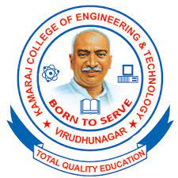

PEO 1 : Graduates of the programme will exhibit expertise in technical knowledge by applying distinctive skills in various fields of Information Technology
PEO 2 : Graduates will become pioneers in the field of Information Technology by working collaboratively and providing solutions to meet societal needs through persistent learning
PEO 3 : Graduates will be able to adapt innovative practices and contribute towards research and technological development in the field of Information Technology through Total Quality Education
PSO1 :Design and develop applications in the field of Information Technology by applying the knowledge acquired from Computer Organization & Engineering, Networking, Software Engineering & Programming, Data Analytics & other allied topics
PSO2 :Demonstrate an ability to analyse, design, and develop software solutions to cater the needs of diversified business sectors.
PO1 :Engineering knowledge: Apply the knowledge of mathematics, science, engineering fundamentals, and an engineering specialization to the solution of complex engineering problems.
PO2 :Problem analysis: Identify, formulate, review research literature, and analyze complex engineering problems reaching substantiated conclusions using first principles of mathematics, natural sciences, and engineering sciences.
PO3 : Design/development of solutions: Design solutions for complex engineering problems and design system components or processes that meet the specified needs with appropriate consideration for the public health and safety, and the cultural, societal, and environmental considerations.
PO4 : Design/development of solutions: Design solutions for complex engineering problems and design system components or processes that meet the specified needs with appropriate consideration for the public health and safety, and the cultural, societal, and environmental considerations.
PO5 : Modern tool usage: Create, select, and apply appropriate techniques, resources, and modern engineering and IT tools including prediction and modeling to complex engineering activities with an understanding of the limitations.
PO6 : The engineer and society: Apply reasoning informed by the contextual knowledge to assess societal, health, safety, legal and cultural issues and the consequent responsibilities relevant to the professional engineering practice.
PO7 :Environment and Sustainability: Understand the impact of the professional engineering solutions in societal and environmental contexts, and demonstrate the knowledge of, and need for sustainable development.
PO8:Ethics: Apply ethical principles and commit to professional ethics and responsibilities and norms of the engineering practice.
PO9 : Individual and team work: Function effectively as an individual, and as a member or leader in diverse teams, and in multidisciplinary settings.
PO10 :Communication: Communicate effectively on complex engineering activities with the engineering community and with society at large, such as, being able to comprehend and write effective reports and design documentation, make effective presentations, and give and receive clear instructions.
PO11 :Project management and finance: Demonstrate knowledge and understanding of the engineering and management principles and apply these to one's own work, as a member and leader in a team, to manage projects and in multidisciplinary environments.
PO12 :Life-long learning: Recognize the need for, and have the preparation and ability to engage in independent and life-long learning in the broadest context of technological change.
|  | KAMARAJ COLLEGE OF ENGINEERING & TECHNOLOGY S.P.G.Chidambara nadar - C.Nagammal Campus S.P.G.C. Nagar, K.Vellakulam-625 701, Near Virudhunagar |